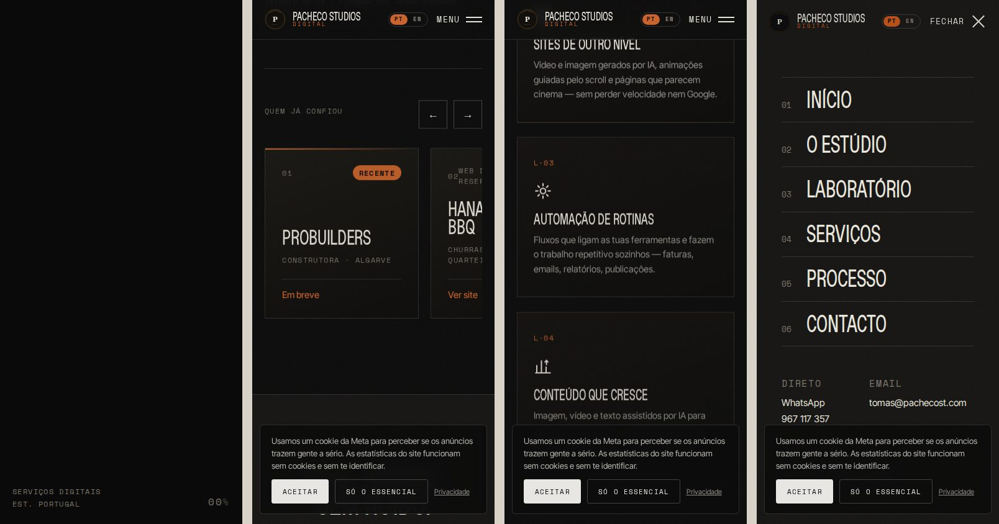
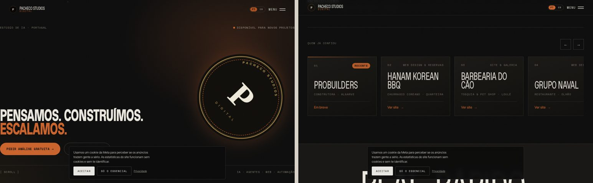

Análise interna · 26/09/2026
O que trava o site principal antes da direção nova. Só análise: nada foi alterado. Cada ponto tem a prova, a prioridade e o que ganharias ao corrigir.
Em resumo
Tecnicamente, o site está acima da média: leve, rápido, com SEO de base e RGPD tratados. O problema é de conversão e de confiança: promete «inteligência artificial» e «sites de nível cinematográfico», mas não mostra nem um agente a funcionar, nem uma captura de um site, nem um número, nem uma cara. Para um dono de restaurante, o site descreve um estúdio; não lhe diz o que acontece se ligar.
og:image. Num negócio que vive do WhatsApp, é o cartão de visita que falta.| Prioridade | Quantas | O que são |
|---|---|---|
| Alta | 6 | Mudam a conversão: prova, foco, herói, og:image, cookies sobre o CTA, pixel da Meta desligado. |
| Média | 5 | Corrigem confiança e acessibilidade: EN incompleto, contraste, alvos de toque, canonical, «Em breve» em primeiro. |
| Baixa | 3 | Polimento: voz do texto, preloader, jargão. |
Prioridade alta
O herói diz «estúdio de inteligência artificial»; o Laboratório descreve «agentes que atendem» e «automação de rotinas» em quatro parágrafos. Não há um fluxo desenhado, uma conversa de exemplo, uma captura de ecrã, um vídeo, um número. A pessoa tem de acreditar.
Prova: na página inteira há 0 imagens de trabalho (as 3 imagens são o logótipo), 0 testemunhos, 0 casos com resultado. A palavra «IA» aparece 24 vezes.
Ganho: é a fraqueza que a direção nova resolve — ver «Mostrar a máquina».
Serviços: IA & Automação, Web Design, Software & Apps, Marketing, Estratégia. Público: «qualquer setor». Quem chega de um cartão ou de um anúncio não percebe em três segundos se isto é para o negócio dele. A página romena (ro.pachecost.com) já resolve isto: restaurantes, lojas, salões; site + automatizações.
Prova: secção «Para quem»: «Trabalho com negócios de qualquer área». Ganho: um site que fala a um tipo de cliente converte mais do que um que fala a todos.
«Um estúdio de inteligência artificial. Pensamos. Construímos. Escalamos.» não diz o que a pessoa ganha. O botão «Pedir análise gratuita» leva a #contacto, onde não há formulário nem explicação: o que é a análise, o que recebe, em quanto tempo.
Prova: 0 formulários na página; o CTA é uma âncora interna. Ganho: um herói com resultado concreto («site feito antes de pagares», «recepcionista que atende no WhatsApp») + um CTA que diz o que acontece a seguir.
Prioridade alta (continuação)
Na primeira dobra de um telemóvel de 390 px, o banner da Meta cobre o «Pedir análise gratuita» e o «Ver o laboratório». O primeiro gesto do visitante é fechar um aviso.
Prova: imagem na página 7 (ecrã 1). Ganho: banner mais baixo e mais pequeno, ou só quando o pixel for mesmo usado.
As etiquetas Open Graph têm título e descrição mas não têm og:image. Quando alguém envia o link por WhatsApp, aparece só texto. Também não há canonical.
Prova: og:title, og:description, og:type, og:locale presentes; og:image ausente. Ganho: uma imagem 1200×630 com o slogan (já existe a da página romena).
O código está bem feito: o pixel da Meta só arranca depois de «Aceitar» e recusa-se a arrancar enquanto o identificador for o valor de exemplo «COLA_AQUI». Ou seja, hoje o pixel não existe, os anúncios não são medidos, e mesmo assim todos os visitantes veem o aviso (que tapa o botão principal no telemóvel, ponto 4).
Prova: if (!PIXEL || PIXEL.indexOf("COLA") === 0) return; e <meta name="facebook-domain-verification" content="COLA_AQUI">. Ganho: ou se liga o pixel a sério (identificador + verificação), ou se tira o aviso até lá. As estatísticas do GoatCounter não precisam dele.
Prioridade média
Nove clientes reais são a melhor prova que o site tem, e estão em cartões de texto. O primeiro cartão é a ProBuilders, «Em breve»: a primeira coisa que se vê na prova social é o que ainda não existe.
Ganho: capturas dos sites (ou os quadrados com a fonte e as cores de cada um, como na página romena), o cliente mais forte primeiro, «Em breve» no fim ou fora.
105 blocos com tradução para 230 blocos de texto. A lista de clientes, a política de privacidade e a 404 ficam em português. A língua muda por JavaScript na mesma URL, sem hreflang, por isso o Google só vê a versão portuguesa.
Ganho: ou EN completo em /en/ com hreflang, ou tirar o botão e assumir PT (e RO na página romena).
O cinza «ash» (#7A756A) sobre o preto dá 4,3:1 e o branco sobre o âmbar dos botões dá 4,0:1; o mínimo para texto pequeno é 4,5:1. São as cores das etiquetas em Space Mono (secções, «Estúdio de IA · Portugal», rodapé) e do texto dos botões.
Prova: axe-core, regra color-contrast, 13 ocorrências (390 px). Ganho: um cinza um pouco mais claro (#A5A19B dá 7:1 sobre preto) e o texto dos botões em preto sobre âmbar (5:1) resolvem tudo sem mudar o desenho.
«PT / EN» a 9 px; «Estúdio de IA», «Disponível para novos projetos», «[ Scroll ]» a 11,5 px; os links do topo e do rodapé (WhatsApp, telefone, email, serviços) com 18–19 px de altura, quando o mínimo para o dedo é 44 px.
Prova: 12 alvos abaixo de 44 px; 10 textos abaixo de 12 px. Ganho: mais gente a acertar no WhatsApp à primeira, sobretudo donos de 50+ anos.
Prioridade média e baixa
«Três passos. Zero ruído. Descobrir · Construir · Escalar» é o processo de uma agência. O processo real que funciona à porta (site feito antes, mostrado no telemóvel, pagamento só se gostar) não aparece. É a frase que tira o medo.
Alterna entre «eu» («dou a cara», «o que construo») e «nós» («pensamos», «usamos IA»). «Escalar», «fluxos», «agentes», «sem ruído» são palavras de agência. O dono de um café entende «atende», «marca», «lembra», «cobra».
O contador de carregamento existe por estética; a página está pronta muito antes. Em rede móvel fraca, é um segundo a olhar para números.
Repete a dispersão do ponto 2. Quando o foco mudar, o rodapé muda com ele.
Provas


Medições feitas em 26/09/2026 sobre o zip de deploy, com Chromium: peso e pedidos, LCP e CLS (PerformanceObserver), axe-core 4 (WCAG 2.1 AA), tamanhos de letra e de alvo calculados no DOM, testes com JavaScript desligado e com «prefers-reduced-motion». Os sites dos clientes não foram avaliados.
Ordem de trabalho — quando decidires avançar
Meia hora: og:image + canonical; identificador e verificação do pixel da Meta preenchidos (ou aviso de cookies retirado até lá); aviso mais pequeno e abaixo do CTA.
Uma hora: cinza das etiquetas para #A5A19B; PT/EN, links do topo e do rodapé com 44 px; «Em breve» para o fim; método real («site feito antes de pagares») na secção Processo.
Um dia: os nove clientes com os quadrados da página romena (fonte e cores de cada um) em vez de cartões de texto; herói com uma promessa concreta e um CTA que diz o que acontece a seguir.
Com a direção nova: secção «Como é feito» com um fluxo desenhado por automatização e a demo do WhatsApp. Ver o documento «Mostrar a máquina».
Tudo o que está bem (velocidade, SEO de base, identidade, resiliência sem JavaScript) mantém-se. Nenhuma destas alterações exige refazer o site.